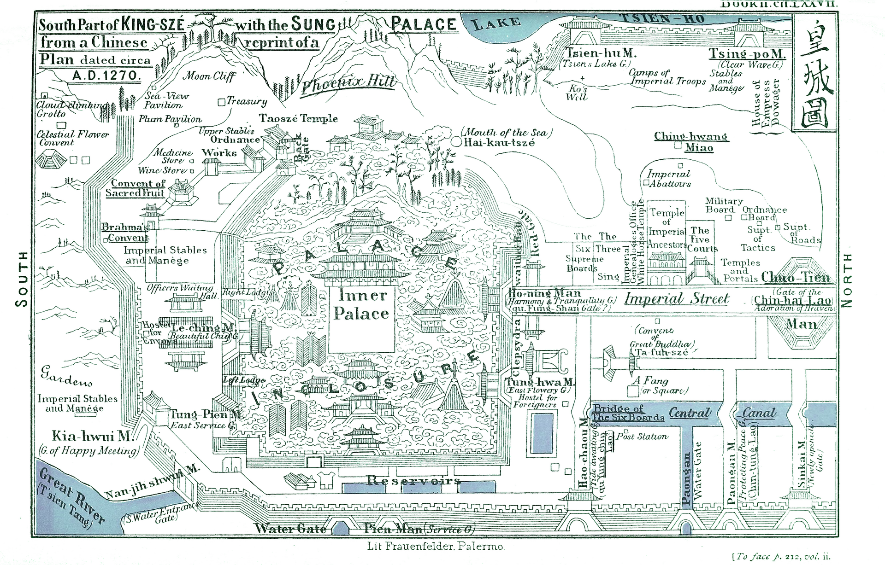

第 5 章
河工与军费吃掉多少
汴河疏浚的物料清单上，木材一项写着“十万章”。这份报告在熙宁五年九月送到中书。工程要疏浚自汴口至泗州淮口八百四十余里的河道，调集民夫数十万，工期跨越整个冬季。十万章木材只是加固堤岸、构筑水门所需的一项。工程还要支取大量石料，而仅木材一项已足以说明：这不是一次寻常的岁修。
汴河是帝国的漕运主干，每年输送数百万石粮食至京师。它的水源依赖黄河补给，也因此承受着黄河带来的泥沙。到熙宁年间，汴河河底已高出汴梁地面一丈二尺有余，成为一条“地上悬河”。疏浚因此从改善航道，升级为保卫京城的防洪紧急措施。时任检正中书刑房公事的沈括被特命提举此事。一个变法派的新进官员，被派去管一条河的淤泥。
沈括的职务本身也值得留意。检正中书刑房公事是熙宁变法新设的职位，中书五房绕过保守派集中的中书门下，直接监督和管理事务。变法派安排沈括这样的新人出任这一职务，用意在于扫除保守派在这些部门的影响力，提高行政部门执行变法的效率。河工交到他手上，说明这条河的疏浚已被纳入变法派直接掌控的政务清单。
这项工程像一道闸门，把视线从青苗、免役、市易的账面增收，引向这些钱最终流向的甬道。王安石变法的核心宣称是“富国强兵”，但强兵本身即是吞噬资源的无底洞。维持帝国基本运转的刚性支出——养兵、河防、岁币——早已形成固定的洪流。新法所增之入，是注入了这片已然汹涌的海洋，还是能积蓄成改善财政结构的活水？不理解钱花到哪里去，就无法理解为何变法必须在征收端持续加码。
几乎与沈括受命疏浚汴河同时，西北边境一场旨在“强兵”的军事行动正处于关键阶段。熙宁五年八月，在王安石的支持下，秦凤路沿边安抚使王韶发动了熙河战役。目标是收复河湟地区，以切断西夏右臂，扭转对夏战略守势。这场战役是“富国强兵”理想的一次主动实践，但其后勤消耗即刻压上了财政的账面。
一次大规模军事行动的支出链条复杂而具体。军队开拔与作战，首先消耗的是粮草。北宋常备军规模庞大，禁军、厢军总数在熙宁年间虽经精简，仍维持数十万之众，其中大部分布防于西北沿边。这些军队不事生产，完全依赖国家供养。北宋养兵费用常年占据财政支出的十之七八。这个比例并非熙宁年间的新问题，而是自仁宗朝以来就存在的结构性压力。
要理解这个压力的分量，需要把它放回北宋开国以来的财政格局里。宋太祖立国，鉴于唐末五代藩镇之祸，采取强干弱枝之策，把精锐部队收归中央，形成庞大的禁军系统。这一制度在防止内乱上有效，代价则是中央财政必须长期供养一支规模空前的常备军。到仁宗朝，军队数量达到高峰，养兵费用占财政支出的比例已经很高。英宗治平年间，这一结构并未改变。神宗即位后，王安石变法的一个目标就是“强兵”，但强兵本身需要投入。
变法之前，北宋财政已处于“积贫”状态。赋税收入虽比唐代更多，却因冗官、冗兵、冗费的“三冗”问题而长期入不敷出。变法的初衷之一，正是要解决这个收支失衡。但强兵的每一步都需要新投入：保甲法训练民兵需要器械、教头与场地；将兵法整编军队需要重新配置指挥体系与后勤；军器监制造兵器需要原料、工匠与工场。每一项“强兵”措施，在减少长期养兵成本之前，都先产生一笔可观的短期支出。这就是变法财政逻辑的内在矛盾：要省钱，先花钱。
熙河战役的具体钱粮调拨记录，现存史料中并未留下完整的报销清单。但可以从几个侧面拼出大致规模。王韶在熙河路进筑城寨，每筑一城，需调拨粮草数万石、钱数万贯。这些城寨并非一次性的军事据点，而是需要长期驻军、持续补给的前沿堡垒。熙宁年间在西北沿边陆续进筑的城寨，构成了一条不断延伸的财政消耗线。每一座城寨的背后，都是一串从内地州县征调、转运、仓储、分发的数字。
转运本身也是巨大的成本。从关中或蜀中调粮至熙河前线，路途数百里至千余里，民夫、牲畜、车辆、沿途损耗，往往使实际到达前线的粮草只占起运时的一小部分。这种损耗率在宋代文献中屡有记载，虽然具体数字因路线与季节而异，但“十石至者不过五六”之类的说法并非罕见。这意味着，账面调拨的粮草数量，需要乘以一个显著大于一的系数，才是实际的财政负担。
与熙河战役并置的，是同期其他几项刚性支出。岁币是一项。北宋与辽、西夏的和平维持，需要每年向辽输纳银绢，向西夏输纳银绢茶。这些数额在熙宁年间并未因变法而减少，反而因西北用兵而面临增加的压力。岁币是刚性的，不能拖欠，不能打折，不能以“新法增收”为由重新谈判。澶渊之盟以来的和平格局，建立在每年按时输纳的基础上。一旦输纳出现迟疑，边境局势就可能立刻紧张，而紧张意味着更多的军费。
黄河的频繁决口是另一项。熙宁年间，黄河决口与改道的记录不绝于书。每一次决口，都意味着淹没州县、冲毁农田、阻断漕运，以及随之而来的堵口工程。堵口工程的开支往往数倍于岁修，且具有突发性，无法提前编入预算。汴河疏浚属于常规维护，黄河堵口则是紧急支出。两者叠加，构成河工支出的两个层次。常规维护可以计划，紧急堵口只能应急拨款。财政账本上，后者永远是一笔无法预料的支出。
还有一项容易被忽略的支出：变法机构本身的运转成本。制置三司条例司、司农寺、市易务、各路的提举常平官与提举市易官，这些新设或扩编的机构，需要办公场所、吏人俸禄、文书往来、巡查差旅。这些开支单笔不大，但架不住机构多、层级多、人员多。变法派为了绕开保守派集中的中书门下，新设了中书五房等机构，沈括出任检正中书刑房公事即是这一安排的一部分。机构的增设，在提高执行效率的同时，也增加了行政成本。
现在把收入端的数字摆到同一张桌上。青苗钱每年发放多少、收回多少、息钱几何，前几章已有讨论。免役钱的征收总额与结余，市易务的息钱收入，这些构成了新法在账面上的增收。把这些数字加总，再与上述支出项对照，一个粗略的比例关系便浮现出来。养兵费用占财政支出的十之七八，这是北宋财政的基本盘。新法所增之入，即便全部投入养兵，也只能覆盖其中一部分。而河工、岁币、变法机构运转、西北进筑城寨的额外开支，每一项都在争夺同一笔钱。这就是“账平人安”面临的困境。
变法派相信：只要账目能平，国家与百姓各得其安。账不平，则政令虽善亦不可行。但账要平，收入端必须持续增长，而支出端的刚性项目几乎无法削减。养兵不能减，因为西北有西夏、北有辽；岁币不能减，因为那是和平的代价；河工不能减，因为黄河不会因为财政紧张就不决口；强兵的新措施不能减，因为那正是变法的核心目标之一。
于是，变法的财政逻辑就变成了一个循环：要强兵，需要钱；要钱，需要新法增收；新法增收，需要持续加码征收；加码征收，引发民间不满与反对派批评；为了回应批评并维持强兵成果，需要更多钱。这个循环一旦启动，就很难停下来。
反对派御史们手中的数字，恰恰指向这个循环的脆弱环节。他们可以指出：某次河工的费用，相当于全国一年青苗息的总和。这个对比不需要额外评论，数字自身的反差就足够刺眼。他们也可以指出：熙河路进筑城寨的调拨粮草，若折算成钱，相当于免役钱在某几路的全年征收额。这些对比未必精确到个位数，但量级上的可比性，足以让任何关心财政的人感到不安。
更关键的是，这些支出并未改善财政结构。养兵费用依然占大头，岁币依然照付，河工依然年年需要。新法增收的钱流出去之后，并没有形成可积累的财政盈余，也没有转化为可降低未来支出的投资。它们只是填补了旧有的缺口，让账面上看起来收支相抵，或者勉强盈余。这是一种“维持”而非“改善”的财政效果。
理解这一点，就能理解为什么变法在神宗死后一年内被全部废掉。因为当皇帝的支持不再，反对派可以轻易地指出：这些新法带来的钱，并没有让国家变得更好，只是让国家勉强维持着原有的运转。而民间为了提供这些钱，已经付出了不小的代价。
账面上的数字还在增加。青苗息、免役钱、市易息，一笔笔汇入国库。然后，它们从国库流出，变成西北前线的粮草、汴河河道的淤泥、岁币的银绢、军器监的兵器、保甲的训练口粮。流入和流出之间，几乎没有停顿。国库像一条繁忙的运河，水从一头进来，从另一头出去，河床并没有因此变深。
那位秦州木材商人的故事，在这里有了第二层含义。他的木材变成了市易务仓库里的库存，他的利润被压缩，他的账本从历史中消失。而市易务用他的木材换来的息钱，最终流向了汴河河工或熙河城寨。木材商人的损失，变成了国家工程的一块木料或一袋军粮。这个转化链条上，没有人替他记账，但国家账本上的数字，每一个都连着某个商人的利润、某个农户的收成、某个乡户的劳力。

这就是支出端清算的核心发现：新法新增的收入，大部分被军费和河工消耗掉了。这个“大部分”未必是精确的百分比，但方向是明确的。养兵费用占财政支出的十之七八，这个比例在变法前后并未发生根本改变。新法增收的钱，只是让这个比例在账面上显得不那么刺眼，或者让一些原本要拖欠的支出得以支付。
但反对者会追问：如果新法增收的钱只是用来维持旧有的支出结构，那么变法的意义何在？如果强兵需要先花更多的钱，而花出去的钱并未换来可积累的财政改善，那么变法的可持续性就存疑。这些追问，在熙宁年间的奏章中已经出现，在神宗去世后的清算中成为主流声音。
汴河的淤泥还在堆积，黄河的决口还在发生，西北的城寨还在需要粮草。新法的账本上，收入栏的数字在增长，支出栏的数字也在增长。两栏之间的差额，就是“账平人安”的余地。这个余地有多大，决定了变法能走多远。
而那位木材商人，如果还在做生意，他可能会发现：市易务的赊贷利息又涨了，免役钱的征收标准又调了，青苗钱的发放时间又变了。这些变化，最终都会变成他账本上的数字。他的账本没有人替他记，但他的数字，会汇入国家的大账。
国家的大账上，这些数字只是中间的一站。它们从乡村来，从商人身上来，从借贷者身上来，汇入国库，然后继续往前走。走到哪里去？汴河的淤泥里，西北的城寨里，岁币的银绢里。账本翻到最后一页，看到的不是结余，而是一条条流出去的线。
这些线交织成一张网，网住了变法的财政空间。当这个空间被挤压到极限时，变法的正当性就开始磨损。反对者手中同样握有数字——关于浪费、低效和民困的数字。这些数字，将在下一份奏章里出现。
而此刻，汴河疏浚的民夫正在冬季的寒风中挖掘淤泥。他们不知道，自己手中的每一锹土，都连着国家账本上的一笔支出。他们也不知道，这笔支出，来自某个农户的青苗息，或某个商人的市易赊贷。他们只知道，河底要挖深，堤岸要加固，工期不能拖。因为明年春天，漕运的粮船还要从这里经过。粮船上的粮食，将运往京师，供养那数十万不事生产的军队。军队驻扎在西北，防范西夏，维持和平。和平的代价，是岁币，是城寨，是粮草，是钱。这些数字，最终都会回到账本上，成为下一轮收支循环的起点。
账平人安。账不平，则政令虽善亦不可行。这是变法派的核心信念，也是他们面临的终极瓶颈。当不可削减的开支吞噬了新增的收入，账平就成了一种需要持续努力才能勉强维持的状态。而维持，比改善更难。因为维持意味着不能有任何松懈，不能有任何意外，不能有任何新的支出项目。但黄河会决口，西夏会犯边，辽会索求，这些都是意外，都是新的支出。于是，征收端必须持续加码。于是，反对者的数字越来越多。于是，变法的空间越来越窄。这个逻辑链条，在熙宁年间的账本上已经清晰可见。只是当时没有人知道，它会在神宗去世后一年内，以全部废法的形式走到终点。
但终点之前，还有一段路要走。这段路上，数字还在滚动。熙宁六年到七年，西北的军报不断传来。王韶的部队在河湟地区推进，每得一城，便筑一城。筑城需要木料、石料、石灰，需要工匠、民夫、戍卒，需要粮草、钱帛、铁器。这些物资从秦凤路、永兴军路、成都府路征调，沿着新开的道路运往前方。道路本身也是支出——为转运粮草而修筑的便道，为传递军报而设置的驿站，为屯驻军队而搭建的营寨。这些开支不列入战报，只列入转运司的账目。转运司的账目，又汇入三司或司农寺的总账。总账上的数字，最终变成中书省案头的一份统计。
汴河的疏浚工程在冬季完工。数十万民夫返回乡里，木材变成了堤岸的一部分，石料沉入水门的基础。工程结束后，沈括的奏报里写的是河道深度、水门尺寸、堤岸长度。这些数字是工程验收的依据，不是财政支出的记录。财政支出的记录，分散在物料采购、民夫口粮、工匠雇值、官吏差旅等无数细目中。这些细目加总起来，是一个中书省不愿意公开讨论的数字。因为公开了，就会有人问：这笔钱从哪里来？
从哪里来？从青苗息来，从免役钱来，从市易息来。从那些被压缩了利润的商人身上来，从那些借了青苗钱的农户身上来，从那些交了免役钱的乡户身上来。这些钱汇入国库，然后流向汴河的淤泥、西北的城寨、辽国的岁币、军器监的工场。流向每一个需要钱的地方，唯独没有流向“结余”这个科目。
熙宁年间的国库账本上，结余是一个稀薄的数字。有时候是正数，有时候是负数。正数的时候，王安石在神宗面前可以理直气壮地说：新法有效，国用充足。负数的时候，他需要解释：这是暂时的，是西北用兵和河工叠加的结果，等战事平息、河工完工，结余就会回来。但战事没有平息。河工也没有完工。熙宁七年，黄河在大名府一带决口，堵口工程耗费巨万。熙宁八年，交趾犯边，朝廷调兵南征，又是一笔额外的军费。熙宁九年，西北再次用兵，熙河路的城寨需要加固，粮草需要增运。每一件事都是“意外”，每一件意外都需要钱。而钱，只能从新法里来。
这就是“账平人安”的真相：账平不是一种可以抵达的状态，而是一种需要不断奔跑才能维持的姿势。一旦停下，账就不平了。一旦账不平，人就不安了。所以必须继续跑，继续收，继续借，继续贷。青苗钱不能停，因为停了就少一笔息；免役钱不能减，因为减了就少一笔结余；市易务不能关，因为关了就没有赊贷收入。新法诸项，每一项都变成了财政循环中不可拆卸的零件。拆掉任何一个，整个机器就会停转。
反对派御史们看到了这一点。他们看到的不是“新法有效”，而是“新法不能停”。一个不能停的机器，意味着它已经失去了自我调节的能力。它只能加速，不能减速。而加速的代价，由民间承担。
熙宁七年，郑侠上《流民图》。图中描绘的是旱灾之后，百姓流离失所、拆屋卖瓦、扶老携幼逃荒的景象。郑侠把这张图与奏章一起呈给神宗，奏章里说：这些流民，都是新法所致。神宗看了图，一夜未眠。第二天，下诏暂停部分新法。这是新法第一次因为民间的压力而暂停。暂停的时间不长，但足以说明一个问题：当支出端的压力传导到民间，民间的承受力是有极限的。这个极限一旦被突破，政治上的反弹就会到来。
而反弹的力量，来自那些被新法剥夺了“记账权”的人——地方士大夫、乡村上户、中小商人。他们原本是地方剩余的支配者，新法把这份支配权收归中央，他们便失去了在地方账本上记账的资格。他们的反抗，不是基于账目盈亏，而是基于记账权的丧失。但王安石不能承认这一点。他必须坚持：新法的问题不在方向，而在执行。执行出了问题，就换人、换办法、换考核标准。
熙宁七年到九年，他不断调整青苗钱的发放方式、免役钱的征收标准、市易务的赊贷条件。每一次调整，都试图让账更平一些，让人更安一些。但每一次调整，都增加了行政成本，都让地方官吏有了新的寻租空间，都让民间的实际负担变得更难预测。
账平人安。这四个字在熙宁年间的奏章和诏令中反复出现，但它的含义在悄悄变化。最初，它是变法的目标：通过理财，让国家与百姓各得其安。后来，它变成了变法的理由：因为账不平，所以必须继续变法。再后来，它变成了变法的枷锁：为了账平，必须牺牲人安。当“账平”与“人安”发生冲突时，变法派选择了账平。因为账平是可见的、可考核的、可向皇帝汇报的；人安是模糊的、难以量化的、容易被忽视的。
这就是支出端清算的最终发现：新法新增的收入，大部分被军费和河工消耗掉了。这个“大部分”在账面上表现为“维持”，在民间表现为“负担”。维持的是旧有的支出结构，负担的是新的征收项目。两者之间的差额，就是变法的财政空间。这个空间在熙宁年间不断收窄，到神宗去世时，已经窄到无法容纳任何新的支出项目。所以当司马光上台，要求废除新法时，他不需要论证新法有多坏，只需要指出：新法带来的钱，并没有让国家变得更好。这个判断，在支出账上是有依据的。